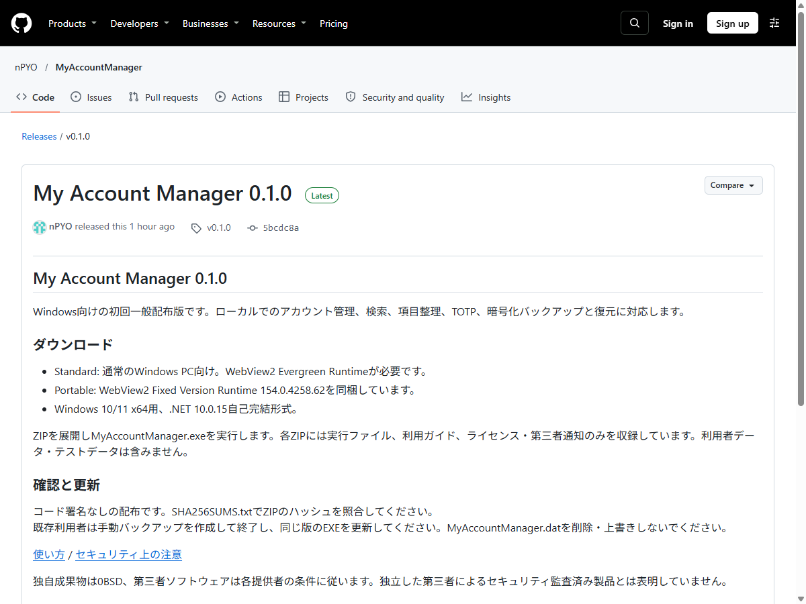
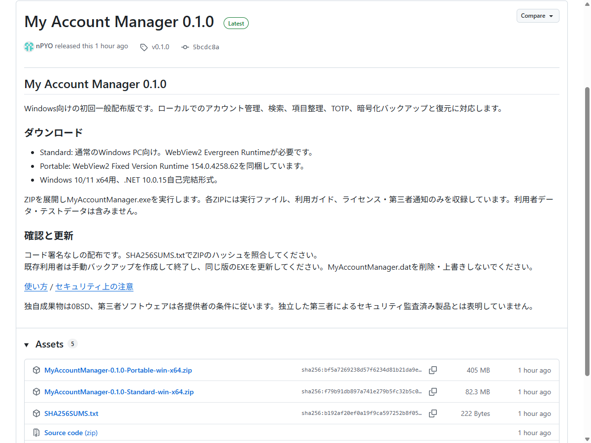
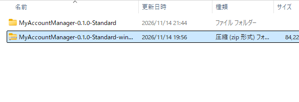
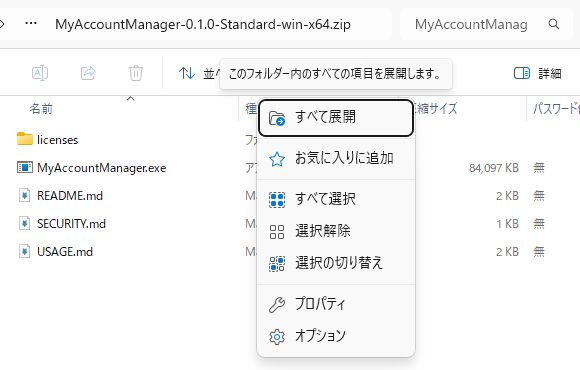
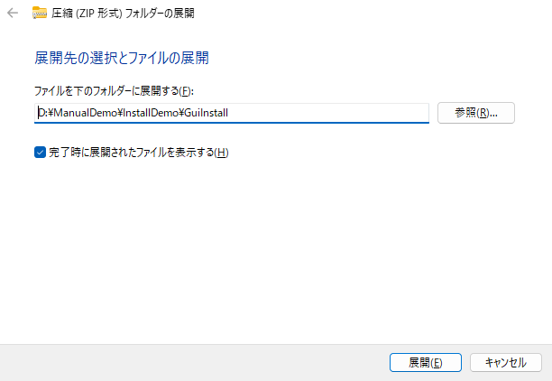
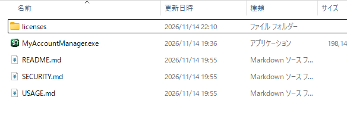
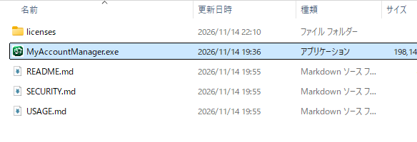

02配布版を選んで起動
Windows用の配布版を選び、ZIPを展開して起動します。
配布版を選ぶ
1配布版を選ぶ
GitHubのReleaseページで動作環境と配布版を確認します。StandardはWebView2 Evergreenが必要、PortableはWebView2を同梱しています。

2ZIPを選択する
Assetsから必要な版のwin-x64.zipを選びます。Source codeではなく配布用ZIPを使用します。

展開して起動する
3ダウンロードしたZIPを開く
配布用ZIPをエクスプローラーで開きます。ZIPの中の実行ファイルをそのまま起動せず、先に展開します。

4すべて展開を選ぶ
上部の［…］から［すべて展開］を選びます。

5展開先を指定する
既存データのない新しいフォルダーを指定し、［展開］を押します。

6展開したファイルを確認する
展開先に実行ファイルと説明文書などがあることを確認します。

7アプリを起動する
展開先の MyAccountManager.exe を開きます。

8初回画面を確認する
［保管庫を作成］が表示されます。登録方法は03の初回登録ページで確認します。